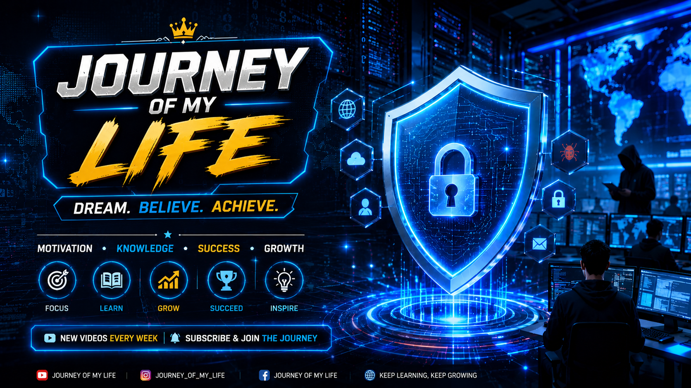

# 🌟 By Journey Of My Life --- ## 📌 Table of Contents * Introduction * Understanding Cyber Security * Why Cyber Security is More Important Than Ever * The Evolution of Cyber Threats * Common Types of Cyber Attacks * Impact of Cybercrime on Individuals and Businesses * Essential Cyber Security Best Practices * The Role of Artificial Intelligence in Cyber Security * Career Opportunities in Cyber Security * Future Trends in Cyber Security * Conclusion --- # 📖 Introduction The digital revolution has transformed the way people communicate, work, learn, and conduct business. Nearly every aspect of modern life now depends on technology and internet-connected systems. While these advancements have created countless opportunities, they have also introduced significant security challenges. Cyber security has become one of the most critical concerns of the modern era. Every day, millions of cyber attacks target individuals, businesses, educational institutions, healthcare organizations, and governments worldwide. Sensitive information such as passwords, financial records, personal identities, and confidential business data are constantly at risk. As technology continues to evolve in 2026, cyber security is no longer a topic reserved for IT professionals. It has become a shared responsibility for everyone who uses digital devices and online services. --- # 🧠 Understanding Cyber Security Cyber security refers to the process of protecting computers, servers, mobile devices, networks, and data from malicious attacks, unauthorized access, and digital threats. ## 🎯 Its primary objectives include: * Protecting sensitive information * Maintaining system integrity * Preventing unauthorized access * Ensuring business continuity * Reducing financial losses * Preserving user privacy Cyber security combines technology, processes, and human awareness to create a secure digital environment. --- # 🚨 Why Cyber Security is More Important Than Ever The importance of cyber security continues to grow due to increasing digital dependence across industries. ## 🌐 Digital Transformation Organizations worldwide are moving their operations to digital platforms. Cloud computing, remote work environments, online services, and mobile applications have expanded the attack surface available to cybercriminals. ## 💰 Growing Financial Risks Cybercrime costs businesses billions of dollars every year. Data breaches, ransomware attacks, and system downtime can result in significant financial damage. ## 🔐 Data Privacy Concerns Personal information has become one of the most valuable assets in the digital economy. Protecting customer and user data is essential for maintaining trust and compliance with privacy regulations. ## ⚠️ Increasing Sophistication of Attacks Cybercriminals are constantly developing advanced attack techniques that can bypass traditional security measures. --- # 🧬 The Evolution of Cyber Threats Cyber threats have evolved dramatically over the past decade. Initially, attackers focused on simple viruses and malware. Today, cybercrime has become a highly organized industry involving sophisticated tools, artificial intelligence, automation, and international criminal networks. ## 🎯 Modern attackers often target: * Financial institutions * Healthcare systems * Government agencies * Educational institutions * E-commerce platforms * Cloud infrastructure * Social media users The increasing complexity of cyber attacks requires equally advanced defense mechanisms. --- # ⚔️ Common Types of Cyber Attacks --- ## 🎣 1. Phishing Attacks Phishing remains one of the most common cyber threats. Attackers create fake emails, websites, or messages that appear legitimate. Their goal is to trick victims into revealing sensitive information such as: * Usernames * Passwords * Credit card numbers * Banking credentials Many successful data breaches begin with a simple phishing email. --- ## 🔒 2. Ransomware Attacks Ransomware is malicious software that encrypts files and locks users out of their systems. Victims are then asked to pay a ransom in exchange for restoring access to their data. ### ❗ Consequences include: * Data loss * Operational disruption * Financial losses * Reputational damage --- ## 🦠 3. Malware Malware is a broad term covering various forms of malicious software. ### Examples include: * Viruses * Worms * Trojans * Spyware * Adware Malware can steal information, damage systems, or provide unauthorized access to attackers. --- ## 🌐 4. Distributed Denial-of-Service (DDoS) Attacks DDoS attacks overwhelm a website or network with excessive traffic. The objective is to make services unavailable to legitimate users. Large-scale attacks can disrupt businesses for hours or even days. --- ## 🆔 5. Identity Theft Identity theft occurs when criminals obtain personal information and use it for fraudulent purposes. ### Stolen information may include: * National ID numbers * Credit card information * Banking details * Login credentials --- # 📉 Impact of Cybercrime on Individuals and Businesses Cybercrime affects organizations of all sizes as well as individual users. ## 💸 Financial Impact * Direct monetary losses * Regulatory penalties * Legal expenses * Recovery costs ## ⚙️ Operational Impact Cyber incidents can disrupt daily operations and reduce productivity. ## 🧾 Reputational Damage Customers lose trust in organizations that fail to protect sensitive data. ## 😟 Emotional Impact Victims often experience stress, anxiety, and frustration after cyber incidents. --- # 🛡️ Essential Cyber Security Best Practices --- ## 🔑 Use Strong Passwords * At least 12 characters * Mix of uppercase & lowercase * Include numbers & symbols * Unique for every account --- ## 🔐 Enable Multi-Factor Authentication (MFA) Adds an extra layer of security beyond passwords. --- ## 🔄 Keep Software Updated Updates fix security vulnerabilities and protect systems. --- ## 📧 Be Careful with Emails * Verify sender * Avoid unknown links * Do not download suspicious attachments --- ## 💾 Backup Important Data Regular backups protect against ransomware and data loss. --- ## 🛡️ Use Security Software Antivirus and endpoint protection help block threats. --- # 🤖 The Role of Artificial Intelligence in Cyber Security Artificial Intelligence is transforming cyber security in remarkable ways. ## 🧠 AI-powered systems can: * Detect unusual behavior * Identify threats in real time * Analyze massive datasets * Automate responses * Predict vulnerabilities However, cybercriminals also use AI, making the battle more complex. --- # 💼 Career Opportunities in Cyber Security Cyber security is one of the fastest-growing technology fields worldwide. ## 🚀 Popular Career Paths: ### 🕵️ Security Analyst Monitors systems and investigates incidents. ### 🧑💻 Ethical Hacker Finds vulnerabilities before attackers do. ### 🔍 Penetration Tester Simulates cyber attacks to test security. ### 🏗️ Security Engineer Builds secure systems and infrastructure. ### ☁️ Cloud Security Specialist Protects cloud environments. ### 🧾 Digital Forensics Investigator Analyzes cyber crimes and collects evidence. --- # 🔮 Future Trends in Cyber Security --- ## 🧱 Zero Trust Architecture “Never trust, always verify” approach for all users and devices. --- ## ☁️ Cloud Security Growth Cloud systems require advanced protection strategies. --- ## 🤖 AI-Powered Threat Detection AI will detect attacks faster than humans. --- ## 🔐 Quantum-Resistant Encryption New encryption methods for future quantum computers. --- ## ⚙️ Automated Security Operations Faster and smarter incident response systems. --- # 🎓 Why Everyone Should Learn Cyber Security Cyber security knowledge is valuable for: * Students * Professionals * Entrepreneurs * Content Creators * Developers * Remote Workers * Business Owners Even basic awareness can prevent major cyber risks. --- # ✅ Conclusion Cyber security is one of the most important technological challenges of our time. As digital transformation accelerates, protecting information, systems, and online identities becomes increasingly critical. Whether you are a student, developer, or business owner, cyber security knowledge is essential for survival in the digital world. The future belongs to those who adapt, learn, and stay secure. --- # 🌟 Journey Of My Life ## 🚀 Exploring Technology, Innovation, Cyber Security, and the Future of the Digital World. **💡 Follow the journey. Learn something new every day.**